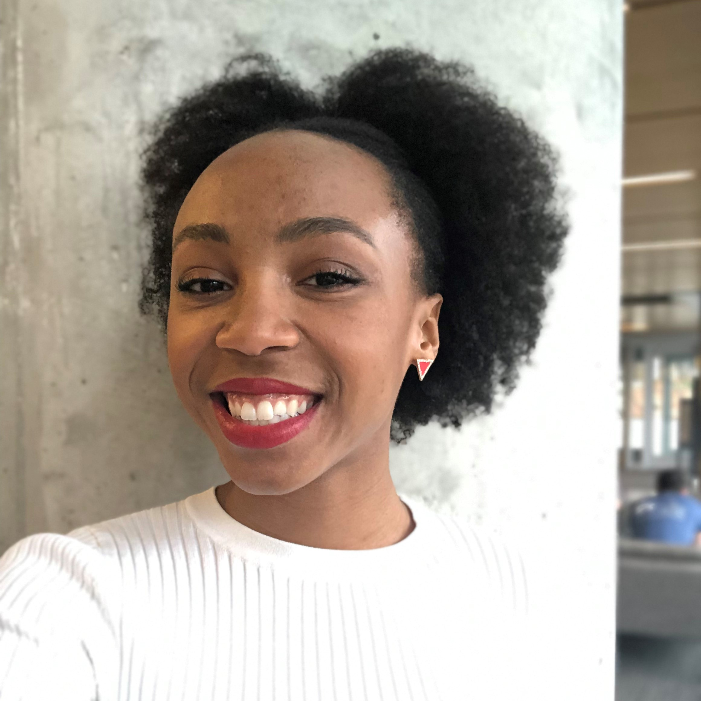

I am a fourth year Computational Media student at the Georgia Institute of Technology. This field of study allows me to combine my passions for software programming and visual design to communicate with others through digital media for the purpose of entertainment, education and business in a unique way. My computing background is in Python 3 and Java 8, and I have developed a strong skill set doing work in the Adobe Suite, specifically Illustrator, InDesign, and Photoshop. Additionally, my studies on the principles of visual design and user interface / user experience design have allowed me to expand my breadth of understanding behind the work I do. I am working to develop my talents in a way that will enable me to extend the bounds of the imagination, and redefine the standard for digital creativity.